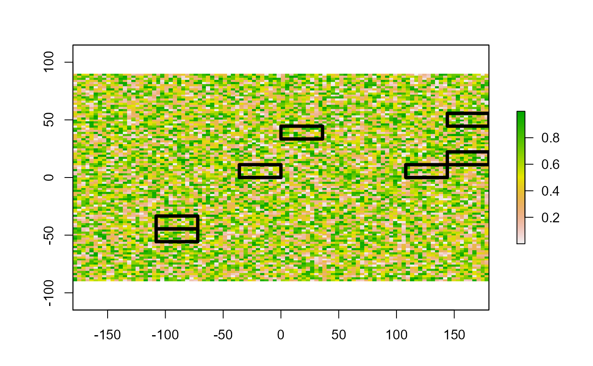

Polygon zonal statistics of a raster
zonal.stats(x, y, stats = c("min", "mean", "max"))
| x | Polygon object of class SpatialPolygonsDataFrame |
|---|---|
| y | rasterLayer object of class raster |
| stats | Statistic or function |
data.frame, nrow(x) and ncol of function results
This function calculates the zonal statistics between a polygon vector object and a raster. This provides the advantage of being able to accept any custom function, passed to the 'stats' argument. Please note that any custom function needs to have a 'na.rm' argument.
Jeffrey S. Evans <jeffrey_evans@tnc.org>
library(raster) library(sp) # skewness function skew <- function(x, na.rm = FALSE) { if (na.rm) x <- x[!is.na(x)] sum( (x - mean(x)) ^ 3) / ( length(x) * sd(x) ^ 3 ) } # percent x >= p function pct <- function(x, p=0.30, na.rm = FALSE) { if ( length(x[x >= p]) < 1 ) return(0) if ( length(x[x >= p]) == length(x) ) return(1) else return( length(x[x >= p]) / length(x) ) } # create some example data p <- raster(nrow=10, ncol=10) p[] <- runif(ncell(p)) * 10 p <- rasterToPolygons(p, fun=function(x){x > 9}) r <- raster(nrow=100, ncol=100) r[] <- runif(ncell(r)) plot(r)# run zonal statistics using skew and pct functions z.skew <- zonal.stats(x = p, y = r, stats = "skew")#> Error in get(as.character(FUN), mode = "function", envir = envir): object 'skew' of mode 'function' was not foundz.pct <- zonal.stats(x=p, y=r, stats = "pct")#> Error in get(as.character(FUN), mode = "function", envir = envir): object 'pct' of mode 'function' was not found#> Error in data.frame(ID = as.numeric(as.character(row.names(p@data))), SKEW = z.skew, PCT = z.pct): object 'z.skew' not found